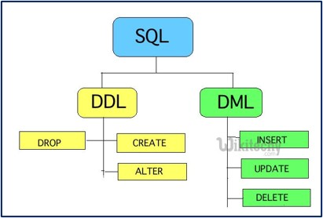
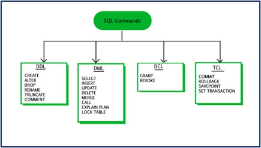
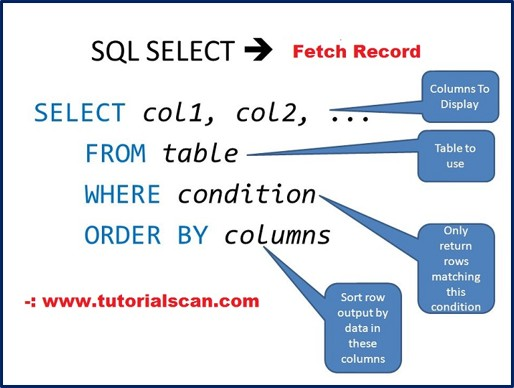
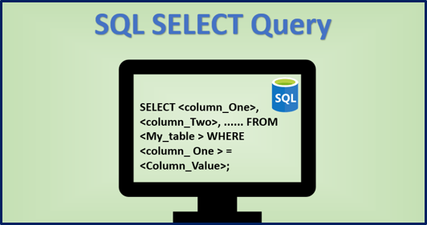
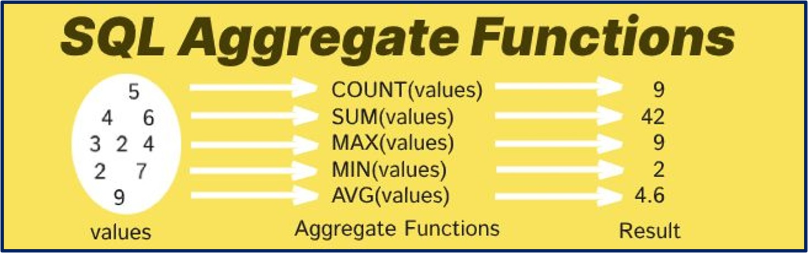
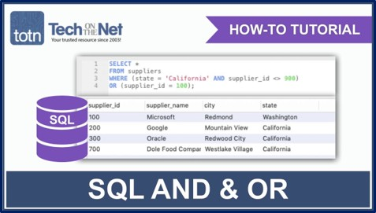

The Database Management System (DBMS)
SQL is the programming language provided by a DBMS to support all of the operations associated with a relational database.
Data Definition Language (DDL) is the part of SQL provided for creating or altering tables. These commands only create the structure; they do not put any data into the database.

;.Example Commands:
CREATE DATABASE BandBooking;
CREATE TABLE Band (BandName varchar(25), NumberOfMembers integer);
ALTER TABLE Band ADD PRIMARY KEY (BandName);
ALTER TABLE Band-Booking ADD FOREIGN KEY (BandName REFERENCES Band(BandName);Note: When an attribute is defined, its data type must be specified (e.g., varchar(25) allows up to 25 characters).
Data Manipulation Language (DML) is used for:

There are two ways to populate a table:
1. Simple Method (if order is known):
INSERT INTO Band ('ComputerKidz', 5);2. Safer Method (defining attributes first):
INSERT INTO Band-Booking (BandName, BookingID)
VALUES ('ComputerKidz', '2016/023');Note: A separate INSERT command has to be used for each tuple (row) in the table.
The main use of DML is to obtain data using a query. A query always starts with the SELECT command.

/* Select specific columns */
SELECT BandName, NumberOfMembers FROM Band;
/* Select ALL columns */
SELECT * FROM Band;Control the presentation of output using ORDER BY and GROUP BY.
/* Sort alphabetically */
SELECT BandName, NumberOfMembers
FROM Band
ORDER BY BandName;
/* Prevent duplicates in output */
SELECT BandName
FROM Band-Booking
GROUP BY BandName;
SELECT BandName
FROM Band-Booking
WHERE Headlining = 'Y'
GROUP BY BandName;Functions like SUM, COUNT, and AVG return a single value from multiple tuples.

/* Count all rows */
SELECT Count(*) FROM Band;
/* Calculate Average */
SELECT AVG (NumberOfMembers) FROM Band;
/* Calculate Sum */
SELECT SUM (NumberOfMembers) FROM Band;A query can be based on a 'join condition' between data in two tables. The SQL uses the full definitive name (Table.Attribute).

SELECT VenueName, Date
FROM Booking
WHERE Band-Booking.BookingID = Booking.BookingID
AND Band-Booking.BandName = 'ComputerKidz';Generic Syntax:
SELECT table1.column1, table2.column2...
FROM table1
INNER JOIN table2
ON table1.common_field = table2.common_field;Used to change existing data. Warning: Always use a WHERE clause, otherwise all rows will be updated.
UPDATE Band
SET NumberOfMembers = 6
WHERE BandName = 'ComputerKidz';Used to remove data. This must be done with care, especially concerning Foreign Keys.
/* Delete from child table first */
DELETE FROM Band-Booking
WHERE BandName = 'ITWizz';
/* Then delete from parent table */
DELETE FROM Band
WHERE BandName = 'ITWizz';If you attempt to delete from the parent table (Band) first, an error occurs because the BandName is a foreign key in Band-Booking.